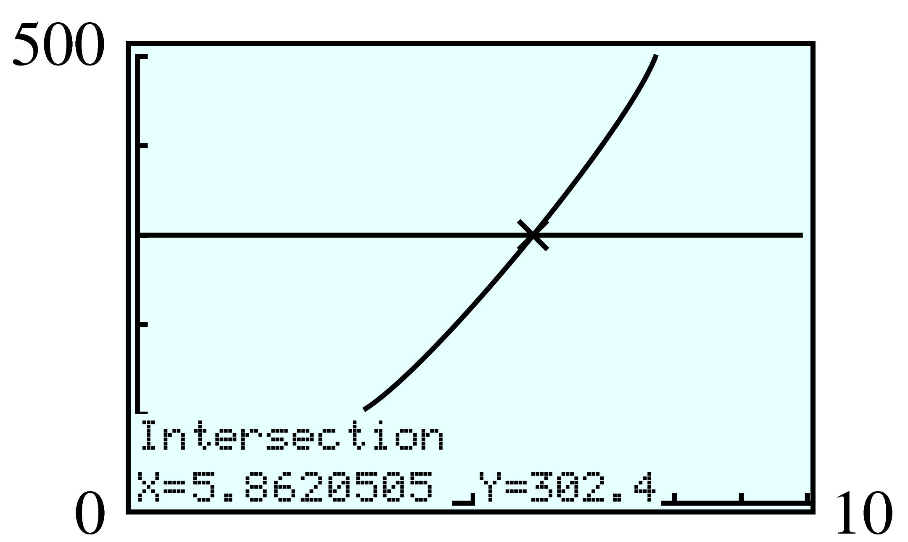
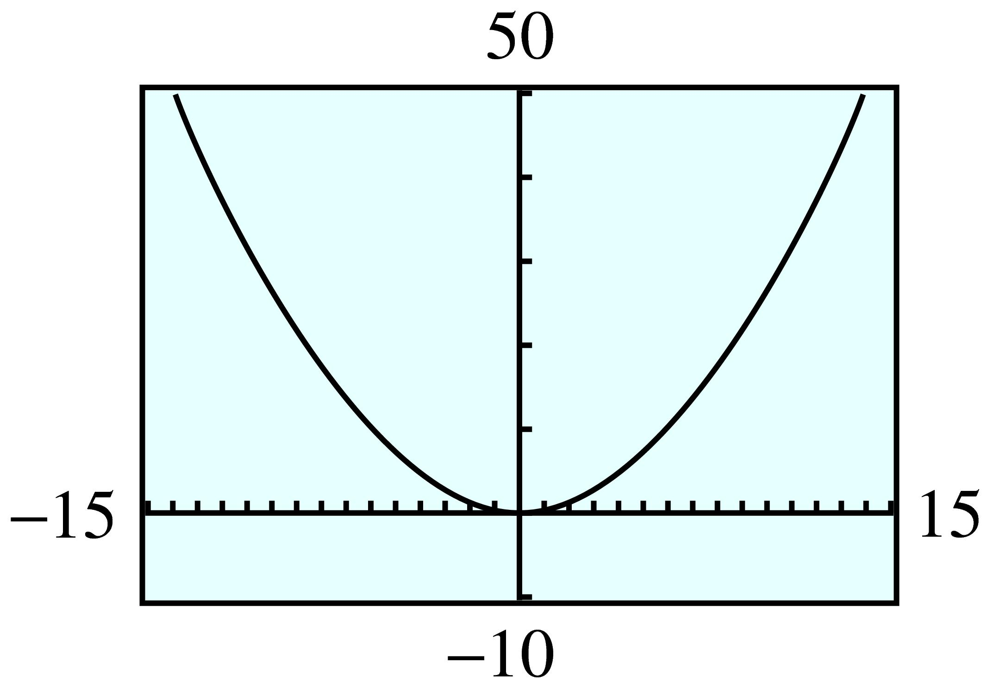
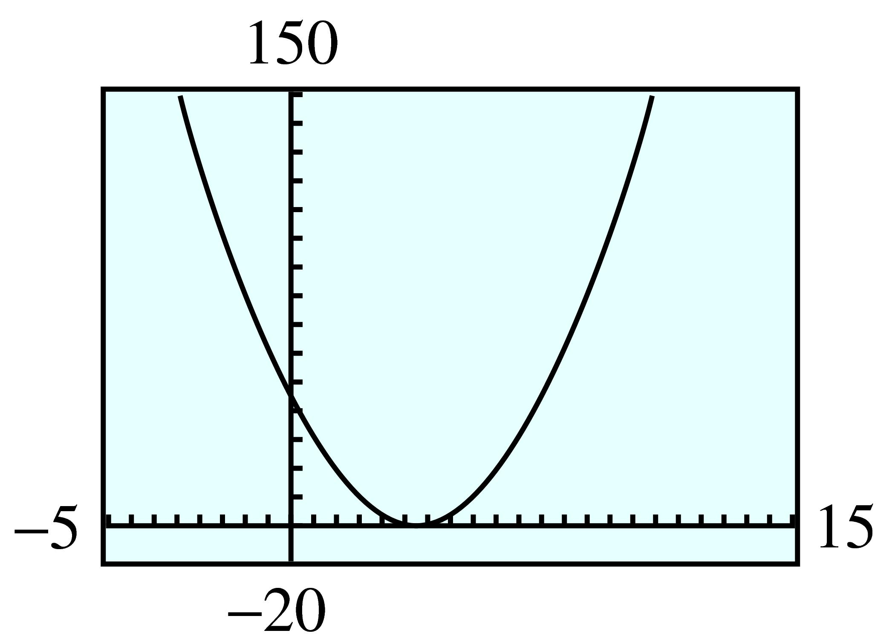
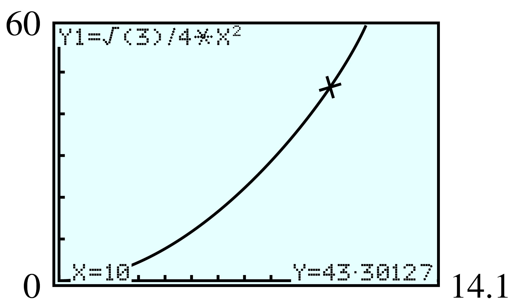
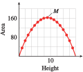
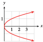
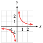
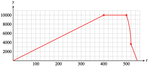
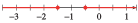

Part II Modeling with functions
¶Exercises 1 Homework 2.1
¶For Problems 1-6, solve by extracting roots. Give exact values for your answers.
For Problems 7-12, solve by extracting roots. Round your answers to two decimal places.
>For Problems 13-16, solve the formulas for the specified variable.
For Problems 17 and 18, refer to the geometric formulas in (((Unresolved xref, reference "geometry"; check spelling or use "provisional" attribute))) .
17.
A conical coffee filter is \(8.4\) centimeters tall.
Write a formula for the filter's volume in terms of its widest radius (at the top of the filter).
-
Complete the table of values for the volume equation. If you double the radius of the filter, by what factor does the volume increase?
\(r\) \(1\) \(2\) \(3\) \(4\) \(5\) \(6\) \(7\) \(8\) \(V\) \(\hphantom{000}\) \(\hphantom{000}\) \(\hphantom{000}\) \(\hphantom{000}\) \(\hphantom{000}\) \(\hphantom{000}\) \(\hphantom{000}\) \(\hphantom{000}\) If the volume of the filter is \(302.4\) cubic centimeters, what is its radius?
Use your calculator to graph the volume equation. Locate the point on the graph that corresponds to the filter in part (c).
\(V = 2.8 \pi r^2\approx 8.8r^2\)
-
\(r\) \(1\) \(2\) \(3\) \(4\) \(5\) \(6\) \(7\) \(8\) \(V\) \(8.8\) \(35.2\) \(79.2\) \(140.7\) \(219.9\) \(316.7\) \(431.0\) \(563.0\) The volume increases by a factor of \(4\text{.}\)
\(5.86\) cm
- 
18.
A large bottle of shampoo is \(20\) centimeters tall and cylindrical in shape.
Write a formula for the volume of the bottle in terms of its radius.
-
Complete the table of values for the volume equation. If you halve the radius of the bottle, by what factor does the volume decrease?
\(r\) \(1\) \(2\) \(3\) \(4\) \(5\) \(6\) \(7\) \(8\) \(V\) \(\hphantom{000}\) \(\hphantom{000}\) \(\hphantom{000}\) \(\hphantom{000}\) \(\hphantom{000}\) \(\hphantom{000}\) \(\hphantom{000}\) \(\hphantom{000}\) What radius should the bottle have if it must hold \(240\) milliliters of shampoo? (One milliliter is equal to 1 cubic centimeter.)
Use your calculator to graph the volume equation. Locate the point on the graph that corresponds to the bottle in part (c).
For Problems 19–24,
19.
The size of a TV screen is the length of its diagonal. If the width of a \(35\)-inch TV screen is \(28\) inches, what is its height?
\(21\) in.
20.
How high on a building will a \(25\)-foot ladder reach if its foot is \(15\) feet away from the base of the wall?
21.
If a \(30\)-meter pine tree casts a shadow of \(30\) meters, how far is the tip of the shadow from the top of the tree?
\(\sqrt{1800}\approx 42.4\) m
22.
A baseball diamond is a square whose sides are \(90\) feet in length. Find the straight-line distance from home plate to second base.

23.
What size square can be inscribed in a circle of radius \(8\) inches?

\(\sqrt{128}\) in. by \(\sqrt{128}\) in. \(\approx 11.3\) in. \({}\times{} 11.3\) in.
24.
What size rectangle can be inscribed in a circle of radius 30 feet if the length of the rectangle must be 3 times its width?

For Problems 25–30,
Use a calculator or computer to graph the function in the suggested window.
Use your graph to find two solutions for the given equation. (See (((Unresolved xref, reference "graphs-of-functions"; check spelling or use "provisional" attribute))) to review graphical solution of equations.)
Check your solutions algebraically, using mental arithmetic.
25.
-
\(y=\dfrac{1}{4}x^2 \)
\begin{align*} {\text{Xmin}} \amp = -15 \amp\amp {\text{Xmax}} = 15\\ {\text{Ymin}} \amp = -10 \amp\amp {\text{Ymax}} = 40 \end{align*} \(\dfrac{1}{4}x^2=36 \)
- 
\(x=\pm 12\)
26.
-
\(y=8x^2 \)
\begin{align*} {\text{Xmin}} \amp = -15 \amp\amp {\text{Xmax}} = 15\\ {\text{Ymin}} \amp = -50 \amp\amp {\text{Ymax}} = 450 \end{align*} \(8x^2=392 \)
27.
-
\(y=(x-5)^2 \)
\begin{align*} {\text{Xmin}} \amp = -5 \amp\amp {\text{Xmax}} = 15\\ {\text{Ymin}} \amp = -5 \amp\amp {\text{Ymax}} = 25 \end{align*} \((x-5)^2=16 \)

\(x= 1\) or \(x=9\)
28.
-
\(y=(x+2)^2 \)
\begin{align*} {\text{Xmin}} \amp = -10 \amp\amp {\text{Xmax}} = 10\\ {\text{Ymin}} \amp = -2 \amp\amp {\text{Ymax}} = 12 \end{align*} \((x+2)^2=9 \)
29.
-
\(y=3(x-4)^2 \)
\begin{align*} {\text{Xmin}} \amp = -5 \amp\amp {\text{Xmax}} = 15\\ {\text{Ymin}} \amp = -20 \amp\amp {\text{Ymax}} = 130 \end{align*} \(3(x-4)^2=108 \)
- 
\(x= 10\) or \(x=-2\)
30.
-
\(y=\dfrac{1}{2} (x+3)^2 \)
\begin{align*} {\text{Xmin}} \amp = -15 \amp\amp {\text{Xmax}} = 5\\ {\text{Ymin}} \amp = -5 \amp\amp {\text{Ymax}} = 15 \end{align*} \(\dfrac{1}{2} (x+3)^2=8 \)
For Problems 31-42, solve by extraction of roots.
31.
\((x-2)^2=9 \)
\(5, -1\)
32.
\((x+3)^2=4 \)
33.
\((2x-1)^2=16 \)
\(\dfrac{5}{2}, \dfrac{-3}{2}\)
34.
\((3x+1)^2=25 \)
35.
\(4(x+2)^2=12 \)
\(-2 \pm \sqrt{3}\)
36.
\(6(x-5)^2=42 \)
37.
\(\left(x-\dfrac{1}{2} \right)^2=\dfrac{3}{4} \)
\(\dfrac{1}{2} \pm \dfrac{\sqrt{3}}{2} \)
38.
\(\left(x-\dfrac{2}{3} \right)^2=\dfrac{5}{9} \)
39.
\(81\left(x+\dfrac{1}{3} \right)^2=1 \)
\(\dfrac{-2}{9} , \dfrac{-4}{9} \)
40.
\(16\left(x+\dfrac{1}{2} \right)^2=1 \)
41.
\(3(8x-7)^2=24 \)
\(\dfrac{7}{8} \pm \dfrac{\sqrt{8}}{8}\)
42.
\(2(5x-12)^2=48 \)
For Problems 43–54,
Solve algebraically.
Use the intersect feature on a graphing calculator to solve.
43.
\(4x^3 - 12 = 852\)
\(6\)
44.
\(\dfrac{8x^3 + 6}{3}= 74\)
45.
\(5\sqrt{x} - 9 = 31\)
\(64\)
46.
\(25-2\sqrt{x} =1\)
47.
\(\dfrac{1}{2x-3}=\dfrac{3}{4} \)
\(\dfrac{13}{6} \)
48.
\(\dfrac{15}{x+16}=3\)
49.
\(8-6\sqrt[3]{x} =-4\)
\(8\)
50.
\(\dfrac{4\sqrt[3]{x}}{5}+3 =7\)
51.
\(\sqrt{3x-2}+3 =8\)
\(9\)
52.
\(6\sqrt{1-2x} =30\)
53.
\(\dfrac{2}{\sqrt{4x-2}} =8\)
\(\dfrac{33}{64} \)
54.
\(\dfrac{1}{\sqrt{x+2}} =\dfrac{3}{4} \)
55.
Cyril plans to invest $\(5000\) in a money market account that pays interest compounded annually.
Write a formula for the balance, \(B\text{,}\) in Cyril's account after two years as a function of the interest rate, \(r\text{.}\)
If Cyril would like to have $\(6250\) in two years, what interest rate must the account pay?
Use your calculator to graph the formula for Cyril's account balance. Locate the point on the graph that corresponds to the amount in part (b).
\(B = 5000 (1 + r )^2\)
\(11.8\%\)

56.
You plan to deposit your savings of $\(1600\) in an account that compounds interest annually.
Write a formula for the amount in your savings account after two years as a function of the interest rate, \(r\text{.}\)
To the nearest tenth of a percent, what interest rate will you require if you want your $\(1600\) to grow to $\(2000\) in two years?
Use your calculator to graph the formula for the account balance. Locate the point on the graph that corresponds to the amount in part (b).
57.
Carol's living expenses two years ago were $\(1200\) per month. This year, the same items cost Carol $\(1400\) per month. What was the annual inflation rate for the past two years?
\(8\%\)
58.
Two years ago, the average price of a house in the suburbs was $\(188,600\text{.}\) This year, the average price is $\(203,700\text{.}\) What was the annual percent increase in the cost of a house?
59.
A machinist wants to make a metal section of pipe that is \(80\) millimeters long and has an interior volume of \(9000\) cubic millimeters. If the pipe is \(2\) millimeters thick, its interior volume is given by the formula
where \(h\) is the length of the pipe and \(r\) is its radius. What should the radius of the pipe be?
\(7.98\) mm
60.
A storage box for sweaters is constructed from a square sheet of corrugated cardboard measuring \(x\) inches on a side. The volume of the box, in cubic inches, is
If the box should have a volume of \(1960\) cubic inches, what size cardboard square is needed?
61.
The area of an equilateral triangle is given by the formula \(A = \dfrac{\sqrt{3}}{4}s^2\text{,}\) where \(s\) is the length of the side.
Find the areas of equilateral triangles with sides of length \(2\) centimeters, \(4\) centimeters, and \(10\) centimeters. First give exact values, then approximations to hundredths.
-
Graph the area equation in the window
\begin{align*} {\text{Xmin}} \amp = 0 \amp\amp {\text{Xmax}} = 14.1\\ {\text{Ymin}} \amp = 0 \amp\amp {\text{Ymax}} = 60 \end{align*}Use the
TRACEor value feature to verify your answers to part (a). Trace along the curve to the point \((5.1, 11.26266)\text{.}\) What do the coordinates of this point represent?
Use your graph to estimate the side of an equilateral triangle whose area is \(20\) square centimeters.
Write and solve an equation to answer part (d).
If the area of an equilateral triangle is \(100\sqrt{3}\) square centimeters, what is the length of its side?
\(\sqrt{3}\approx 1.73\) sq cm, \(4\sqrt{3}\approx 6.93\) sq cm, \(25\sqrt{3}\approx 43.3\) sq cm
- 
An equilateral triangle with side \(5.1\) cm has area \(11.263 \text{ cm}^2\text{.}\)
\(\text{side}\approx 6.8 \) cm
\(\dfrac{\sqrt{3}}{4}s^2=20\text{;}\) \(s \approx 6.8\)
\(\approx 20 \) cm
62.
The area of the ring in the figure is given by the formula \(A =\pi R^2 -\pi r^2\text{,}\) where \(R\) is the radius of the outer circle and \(r\) is the radius of the inner circle.

Suppose the inner radius of the ring is kept fixed at \(r = 4\) centimeters, but the radius of the outer circle, \(R\text{,}\) is allowed to vary. Find the area of the ring when the outer radius is \(6\) centimeters, \(8\) centimeters, and \(12\) centimeters. First give exact values, then approximations to hundredths.
-
Graph the area equation, with r = 4, in the window
\begin{align*} {\text{Xmin}} \amp = 0 \amp\amp {\text{Xmax}} = 14.1\\ {\text{Ymin}} \amp = 0 \amp\amp {\text{Ymax}} = 400 \end{align*}Use the
TRACEfeature to verify your answers to part (a). Trace along the curve to the point \((9.75, 248.38217)\text{.}\) What do the coordinates of this point represent?
Use your graph to estimate the outer radius of the ring when its area is \(100\) square centimeters.
Write and solve an equation to answer part (d).
If the area of the ring is \(9\pi\) square centimeters, what is the radius of the outer circle?
For Problems 63–68, solve for \(x\) in terms of \(a\text{,}\) \(b\text{,}\) and \(c\text{.}\)
69.
You have \(36\) feet of rope and you want to enclose a rectangular display area against one wall of an exhibit hall. The area enclosed depends on the dimensions of the rectangle you make. Because the wall makes one side of the rectangle, the length of the rope accounts for only three sides. Thus
-
Complete the table showing the base and the area of the rectangle for the given heights.
Height Base Area Height Base Area \(1\) \(34\) \(34\) \(10\) \(\) \(\) \(2\) \(32\) \(64\) \(11\) \(\) \(\) \(3\) \(\) \(\) \(12\) \(\) \(\) \(4\) \(\) \(\) \(13\) \(\) \(\) \(5\) \(\) \(\) \(14\) \(\) \(\) \(6\) \(\) \(\) \(15\) \(\) \(\) \(7\) \(\) \(\) \(16\) \(\) \(\) \(8\) \(\) \(\) \(17\) \(\) \(\) \(9\) \(\) \(\) \(18\) \(\) \(\) Make a graph with Height on the horizontal axis and Area on the vertical axis. Draw a smooth curve through your data points.
What is the area of the largest rectangle you can enclose in this way? What are its dimensions? On your graph, label the point that corresponds to this rectangle with the letter \(M\text{.}\)
Let \(x\) stand for the height of a rectangle and write algebraic expressions for the base and the area of the rectangle.
Enter your algebraic expression for the area in your calculator, then use the Table feature to verify the entries in your table in part (a).
Graph your formula for area on your graphing calculator. Use your table of values and your handdrawn graph to help you choose appropriate
WINDOWsettings.Use the intersect command to find the height of the rectangle whose area is \(149.5\) square feet.
Height Base Area Height Base Area \(1\) \(34\) \(34\) \(10\) \(16 \) \(160\) \(2\) \(32\) \(64\) \(11\) \(14\) \(154\) \(3\) \(30\) \(90\) \(12\) \(12\) \(144\) \(4\) \(28\) \(112\) \(13\) \(10\) \(130\) \(5\) \(26\) \(130\) \(14\) \(8\) \(112\) \(6\) \(24\) \(144\) \(15\) \(6\) \(90\) \(7\) \(22\) \(154\) \(16\) \(4\) \(64\) \(8\) \(20\) \(160\) \(17\) \(2\) \(34\) \(9\) \(18\) \(162\) \(18\) \(0\) \(0\) - 
\(162\) sq ft, with base \(18\) ft, height \(9\) ft
Base: \(36 - 2x\text{;}\) area: \(x (36 - 2x)\)
See (a)
\(6.5\) ft or \(11.5\) ft
70.
We are going to make an open box from a square piece of cardboard by cutting \(3\)-inch squares from each corner and then turning up the edges as shown in the figure.

-
Complete the table showing the side of the original sheet of cardboard, the dimensions of the box created from it, and the volume of the box.
Side Length
of boxWidth
of boxHeight
of boxVolume
of box\(7\) \(1\) \(1\) \(3\) \(3\) \(8\) \(2\) \(2\) \(3\) \(12\) \(9\) \(\) \(\) \(\) \(\) \(10\) \(\) \(\) \(\) \(\) \(11\) \(\) \(\) \(\) \(\) \(12\) \(\) \(\) \(\) \(\) \(13\) \(\) \(\) \(\) \(\) \(14\) \(\) \(\) \(\) \(\) \(15\) \(\) \(\) \(\) \(\) Explain why the side of the cardboard square cannot be smaller than \(6\) inches. What happens if the cardboard is exactly \(6\) inches on a side?
Make a graph with Side on the horizontal axis and Volume on the vertical axis. Draw a smooth curve through your data points. (Use your table to help you decide on appropriate scales for the axes.)
Let \(x\) represent the side of the original sheet of cardboard. Write algebraic expressions for the dimensions of the box and for its volume.
Enter your expression for the volume of the box in your calculator; then use the Table feature to verify the values in your table in part (a).
Graph your formula for volume on your graphing calculator. Use your table of values and your handdrawn graph to help you choose appropriate
WINDOWsettings.Use the intersect command to find out how large a square of cardboard you need to make a box with volume \(126.75\) cubic inches.
Does your graph have a highest point? What happens to the volume of the box as you increase \(x\text{?}\)
71.
The jump height, \(J\text{,}\) in meters, achieved by a pole vaulter is given approximately by \(J = v^2/(2g)\text{,}\) where v is the vaulter's speed in meters per second at the end of his run, and \(g = 9.8\) is the gravitational acceleration. (Source: Alexander, 1992)
-
Fill in the table of values for jump heights achieved with values of \(v\) from \(0\) to \(11\) meters per second.
\(v\) \(0\) \(1\) \(2\) \(3\) \(4\) \(5\) \(6\) \(7\) \(8\) \(9\) \(10\) \(11\) \(J\) \(\hphantom{000}\) \(\hphantom{000}\) \(\hphantom{000}\) \(\hphantom{000}\) \(\hphantom{000}\) \(\hphantom{000}\) \(\hphantom{000}\) \(\hphantom{000}\) \(\hphantom{000}\) \(\hphantom{000}\) \(\hphantom{000}\) \(\hphantom{000}\) Graph the jump height versus final speed. (Use the table values to help you choose a window for the graph.)
-
The jump height should be added to the height of the vaulter's center of gravity (at about hip level) to give the maximum height, \(H\text{,}\) he can clear. For a typical pole vaulter, his center of gravity at the end of the run is \(0.9\) meters from the ground. Complete the table of values for maximum heights, \(H\text{,}\) and graph \(H\) on your graph of \(J\text{.}\)
\(v\) \(0\) \(1\) \(2\) \(3\) \(4\) \(5\) \(6\) \(7\) \(8\) \(9\) \(10\) \(11\) \(H\) \(\hphantom{000}\) \(\hphantom{000}\) \(\hphantom{000}\) \(\hphantom{000}\) \(\hphantom{000}\) \(\hphantom{000}\) \(\hphantom{000}\) \(\hphantom{000}\) \(\hphantom{000}\) \(\hphantom{000}\) \(\hphantom{000}\) \(\hphantom{000}\) A good pole vaulter can reach a final speed of \(9.5\) meters per second. What height will he clear?
In 2016, the world record in pole vaulting, established by Renaud Lavillenie in 2014, was 6.16 meters. What was the vaulter's speed at the end of his run?
\(v\) \(0\) \(1\) \(2\) \(3\) \(4\) \(5\) \(6\) \(7\) \(8\) \(9\) \(10\) \(11\) \(J\) \(0\) \(0.05\) \(0.2\) \(0.46\) \(0.82\) \(1.28\) \(1.84\) \(2.5\) \(3.27\) \(4.13\) \(5.1\) \(6.17\) 
\(v\) \(0\) \(1\) \(2\) \(3\) \(4\) \(5\) \(6\) \(7\) \(8\) \(9\) \(10\) \(11\) \(H\) \(0.9\) \(0.95\) \(1.1\) \(1.36\) \(1.72\) \(2.18\) \(2.74\) \(3.4\) \(4.17\) \(5.03\) \(6.0\) \(7.07\) \(5.5\) meters
\(10.15\) meters per second
72.
To be launched into space, a satellite must travel fast enough to escape Earth's gravity. This escape velocity, \(v\text{,}\) satisfies the equation
where \(m\) is the mass of the satellite, \(M\) is the mass of the Earth, \(R\) is the radius of the Earth, and \(G\) is the universal gravitational constant.
Solve the equation for \(v\) in terms of the other variables.
-
The equation
\begin{equation*} mg=\frac{GMm}{R^2} \end{equation*}gives the force of gravity at the Earth's surface. We can use this equation to simplify the expression for \(v\text{:}\) First, multiply both sides of the equation by \(\frac{R}{M}\text{.}\) You now have an expression for \(\frac{GM}{R}\text{.}\) Substitute this new expression into your formula for \(v\text{.}\)
The radius of the Earth is about \(6400\) km, and \(g = 0.0098\text{.}\) Calculate the escape velocity from Earth in kilometers per second. Convert your answer to miles per hour. (One kilometer is \(0.621\) miles.)
The radius of the moon is \(1740\) km, and the value of \(g\) at the moon's surface is \(0.0016\text{.}\) Calculate the escape velocity from the moon in kilometers per second and convert to miles per hour.
Exercises 2 Homework 2.2
¶For problems 1-10, simplify the expression according to the order of operations.
1.
\(-\abs{-9} \)
\(-(-9) \)
\(-9\)
\(9\)
2.
\(2-(-6) \)
\(2-\abs{-6} \)
3.
\(\abs{-8}-\abs{12} \)
\(\abs{-8-12} \)
\(-4\)
\(20\)
4.
\(\abs{-3}+\abs{-5} \)
\(\abs{-3+(-5)} \)
5.
\(4-9\abs{2-8} \)
\(-50 \)
6.
\(2-5\abs{-6-3} \)
7.
\(\abs{-4-5} \abs{1-3(-5)} \)
\(144 \)
8.
\(\abs{-3+7}\abs{-2(6-10)} \)
9.
\(\abs{ \abs{-5}-\abs{-6}} \)
\(1 \)
10.
\(\abs{ \abs{4}-\abs{-6}} \)
In Problems 11–14, show how to use the graphs to find the values. Estimate your answers to one decimal point. Compare your estimates to values obtained with a calculator.
11.
Refer to the graph of \(f (x) = x^3\text{.}\)
Estimate the value of \((1.4)^3\text{.}\)
Find all numbers whose cubes are \(-20\text{.}\)
Find all solutions of the equation \(x^3 = 6\text{.}\)
Estimate the value of \(\sqrt[3]{24} \text{.}\)

\(2.7\)
\(-2.7\)
\(1.8\)
\(2.9\)
12.
Refer to the graph of \(f (x) = x^2\text{.}\)
Estimate the value of \((-2.5)^2\text{.}\)
Find all numbers whose squares are \(12\text{.}\)
Find all solutions of the equation \(x^2 = 15\text{.}\)
Estimate the value of \(\sqrt{10.5} \text{.}\)

13.
Refer to the graph of \(f (x) = \dfrac{1}{x} \text{.}\)

Estimate the value of \(\dfrac{1}{3.4}\text{.}\)
Find all numbers whose reciprocals are \(-2.5\text{.}\)
Find all solutions of the equation \(\dfrac{1}{x} = 4.8\text{.}\)
\(0.3\)
\(-0.4\)
\(0.2\)
14.
Refer to the graph of \(f (x) =\abs{x-2} \text{.}\)
Estimate the value of \(\abs{1.6-2} \text{.}\)
Find all values of \(x\) for which \(\abs{x-2}=3\text{.}\)
Find all solutions of the equation \(\abs{x-2} = 0.4\text{.}\)
For Problems 15–18,
Sketch both functions on the same grid, paying attention to the shape of the graph. Plot at least three guidepoints for each graph to ensure accuracy.
Use the graph to find all solutions of the equation \(f (x) = g(x)\text{.}\)
On what intervals is \(f (x)\gt g(x)\text{?}\)


For Problems 19-24, graph each set of functions together in the ZDecimal window. Describe how graphs (b) and (c) are different from the basic graph.
19.
\(f(x)=x^3\)
\(g(x)=x^3-2\)
\(h(x)=x^3+1\)
Graph (b) is the basic graph shifted 2 units down; graph (c) is the basic graph shifted 1 unit up.
20.
\(f(x)=\abs{x} \)
\(g(x)=\abs{x-2}\)
\(h(x)=\abs{x+1}\)
21.
\(f(x)=\dfrac{1}{x} \)
\(g(x)=\dfrac{1}{x+1.5} \)
\(h(x)=\dfrac{1}{x-1} \)
Graph (b) is the basic graph shifted 1.5 units left; graph (c) is the basic graph shifted 1 unit right.
22.
\(f(x)=\dfrac{1}{x^2} \)
\(g(x)=\dfrac{1}{x^2}+2 \)
\(h(x)=\dfrac{1}{x^2}-1 \)
23.
\(f(x)=\sqrt{x} \)
\(g(x)=-\sqrt{x} \)
\(h(x)=\sqrt{-x} \)
Graph (b) is the basic graph reflected about the \(x\)-axis; graph (c) is the basic graph reflected about the \(y\)-axis.
24.
\(f(x)=\sqrt[3]{x} \)
\(g(x)=-\sqrt[3]{x} \)
\(h(x)=\sqrt[3]{-x} \)
Each graph in Problems 25-26 is a variation of one of the eight basic graphs of (((Unresolved xref, reference "Eight-basic-functions"; check spelling or use "provisional" attribute))) . Identify the basic graph for each problem.
25.

\(\sqrt{x} \)
\(\sqrt[3]{x} \)
\(\abs{x} \)
\(\dfrac{1}{x} \)
\(x^3 \)
\(\dfrac{1}{x^2} \)
26.

In Problems 27–30, use the graph to estimate the solution to the equation or inequality. Show the solution or solutions on the graph. Then check your answers algebraically.
27.
The figure shows a graph of \(f (x) = \sqrt{x} - 2\text{,}\) for \(x\gt 0\text{.}\) Solve the following:
\(\sqrt{x} - 2=1.5\)
\(\sqrt{x} - 2=2.25\)
\(\sqrt{x} - 2\lt 1\)
\(\sqrt{x} - 2\gt -0.25\)
\(x\approx 12\)
\(x\approx 18\)
\(x \lt 9\)
\(x\gt 3\)
28.
The figure shows a graph of \(g(x) = \dfrac{4}{x+2} \text{,}\) for \(x\gt -2\text{.}\) Solve the following:
\(\dfrac{4}{x+2}=4\)
\(\dfrac{4}{x+2}=0.8\)
\(\dfrac{4}{x+2}\gt 1\)
\(\dfrac{4}{x+2}\lt 3\)
29.
The figure shows a graph of \(w(t) = -10(t+1)^3+10 \text{.}\) Solve the following:
\(-10(t+1)^3+10=100\)
\(-10(t+1)^3+10=-140\)
\(-10(t+1)^3+10\gt -50\)
\(-20\lt -10(t+1)^3+10\lt 40\)
\(t\approx -3.1\)
\(t\approx 1.5\)
\(t \lt 0.8\)
\(-2.4\lt t\lt 0.4\)
30.
The figure shows a graph of \(H(z) =4\sqrt[3]{z-4}+6 \text{.}\) Solve the following:
\(4\sqrt[3]{z-4}+6=2\)
\(4\sqrt[3]{z-4}+6=12\)
\(4\sqrt[3]{z-4}+6\gt 14\)
\(4\sqrt[3]{z-4}+6\lt 6\)
For Problems 31-34, gaph the function with the ZInteger setting. Use the graph to solve each equation or inequality. Check your solutionsalgebraically.
31.
Graph \(~~F(x) = 4\sqrt{x - 25}\text{.}\)
Solve \(~~4\sqrt{x - 25}=16\)
Solve \(~~8\lt 4\sqrt{x - 25}\le 24\)
\(x = 41\)
\(29\lt x\lt 61\)
32.
Graph \(~~G(x) = 15 - 0.01(x - 2)^3 \text{.}\)
Solve \(~~15 - 0.01(x - 2)^3 =-18.75\)
Solve \(~~15 - 0.01(x - 2)^3 \le 25\)
33.
Graph \(~~H(x) = 24 - 0.25(x - 6)^2\text{.}\)
Solve \(~~24 - 0.25(x - 6)^2=-6.25\)
Solve \(~~24 - 0.25(x - 6)^2\gt 11.75\)
\(x = -5\) or \(x=17\)
\(-1\lt x\lt 13\)
34.
Graph \(~~R(x) = 0.1(x + 12)^2 - 18 \text{.}\)
Solve \(~~0.1(x + 12)^2 - 18 =14.4\)
Solve \(~~0.1(x + 12)^2 - 18 \lt 4.5\)
For Problems 35–40,
Graph the equation by completing the table and plotting points.
Does the equation define \(y\) as a function of \(x\text{?}\) Why or why not?
35.
\(x=y^2\)
| \(x\) | \(\hphantom{000} \) | \(\hphantom{000} \) | \(\hphantom{000} \) | \(\hphantom{000} \) | \(\hphantom{000} \) | \(\hphantom{000} \) | \(\hphantom{000} \) |
| \(y\) | \(-2\) | \(-1 \) | \(-\frac{1}{2} \) | \(0 \) | \(\frac{1}{2} \) | \(1 \) | \(2 \) |
\(x\) \(4 \) \(1 \) \(\frac{1}{4} \) \(0 \) \(\frac{1}{4} \) \(1 \) \(4 \) \(y\) \(-2\) \(-1 \) \(-\frac{1}{2} \) \(0 \) \(\frac{1}{2} \) \(1 \) \(2 \) no
36.
\(x=y^3\)
| \(x\) | \(\hphantom{000} \) | \(\hphantom{000} \) | \(\hphantom{000} \) | \(\hphantom{000} \) | \(\hphantom{000} \) | \(\hphantom{000} \) | \(\hphantom{000} \) |
| \(y\) | \(-2\) | \(-1 \) | \(-\frac{1}{2} \) | \(0 \) | \(\frac{1}{2} \) | \(1 \) | \(2 \) |
37.
\(x=\abs{y} \)
| \(x\) | \(\hphantom{000} \) | \(\hphantom{000} \) | \(\hphantom{000} \) | \(\hphantom{000} \) | \(\hphantom{000} \) | \(\hphantom{000} \) | \(\hphantom{000} \) |
| \(y\) | \(-2\) | \(-1 \) | \(-\frac{1}{2} \) | \(0 \) | \(\frac{1}{2} \) | \(1 \) | \(2 \) |
\(x\) \(2 \) \(1 \) \(\frac{1}{2} \) \(0 \) \(\frac{1}{2} \) \(1 \) \(2 \) \(y\) \(-2\) \(-1 \) \(-\frac{1}{2} \) \(0 \) \(\frac{1}{2} \) \(1 \) \(2 \) 
no
38.
\(\abs{x}=\abs{y} \)
| \(x\) | \(\hphantom{000} \) | \(\hphantom{000} \) | \(\hphantom{000} \) | \(\hphantom{000} \) | \(\hphantom{000} \) | \(\hphantom{000} \) | \(\hphantom{000} \) |
| \(y\) | \(-2\) | \(-1 \) | \(-\frac{1}{2} \) | \(0 \) | \(\frac{1}{2} \) | \(1 \) | \(2 \) |
39.
\(x=\dfrac{1}{y} \)
| \(x\) | \(\hphantom{000} \) | \(\hphantom{000} \) | \(\hphantom{000} \) | \(\hphantom{000} \) | \(\hphantom{000} \) | \(\hphantom{000} \) | \(\hphantom{000} \) |
| \(y\) | \(-2\) | \(-1 \) | \(-\frac{1}{2} \) | \(0 \) | \(\frac{1}{2} \) | \(1 \) | \(2 \) |
\(x\) \(-\frac{1}{2} \) \(-1 \) \(-2 \) undefined \(2 \) \(1 \) \(\frac{1}{2} \) \(y\) \(-2\) \(-1 \) \(-\frac{1}{2} \) \(0 \) \(\frac{1}{2} \) \(1 \) \(2 \) yes
40.
\(x=\dfrac{1}{y^2} \)
| \(x\) | \(\hphantom{000} \) | \(\hphantom{000} \) | \(\hphantom{000} \) | \(\hphantom{000} \) | \(\hphantom{000} \) | \(\hphantom{000} \) | \(\hphantom{000} \) |
| \(y\) | \(-2\) | \(-1 \) | \(-\frac{1}{2} \) | \(0 \) | \(\frac{1}{2} \) | \(1 \) | \(2 \) |
For Problems 41–52, graph the following piecewise defined functions. Indicate whether the endpoints of each piece are included on the graph.
41.
\(f(x) = \begin{cases} -2 \amp \text{if } x\le 1\\ x-3 \amp \text{if } x\gt 1 \end{cases}\)

42.
\(h(x) = \begin{cases} -x+2 \amp \text{if } x\le -1\\ 3 \amp \text{if } x\gt -1 \end{cases}\)
43.
\(G(t) = \begin{cases} 3t+9 \amp \text{if } t\lt -2\\ -3-\dfrac{1}{2}t \amp \text{if } t\ge -2 \end{cases}\)

44.
\(F(s) = \begin{cases} \dfrac{1}{3}s+3 \amp \text{if } s\lt 3\\ 2s-3 \amp \text{if } s\ge 3 \end{cases}\)
45.
\(H(t) = \begin{cases} t^2 \amp \text{if } t\le 1\\ \dfrac{1}{2}t+\dfrac{1}{2} \amp \text{if } t\gt 1 \end{cases}\)
46.
\(g(t) = \begin{cases} \dfrac{3}{2}t+7 \amp \text{if } t\le -2\\ t^2 \amp \text{if } t\gt -2 \end{cases}\)
47.
\(k(x) = \begin{cases} \abs{x} \amp \text{if } x\le 2\\ \sqrt{x} \amp \text{if } x\gt 2 \end{cases}\)

48.
\(S(x) = \begin{cases} \dfrac{1}{x} \amp \text{if } x\lt 1\\ \abs{x} \amp \text{if } x\ge 1 \end{cases}\)
49.
\(D(x) = \begin{cases} \abs{x} \amp \text{if } x\lt -1\\ x^3 \amp \text{if } x\ge -1 \end{cases}\)

50.
\(m(x) = \begin{cases} x^2 \amp \text{if } x\le \dfrac{1}{2} \\ \abs{x} \amp \text{if } x\gt \dfrac{1}{2} \end{cases}\)
51.
\(P(t) = \begin{cases} t^3 \amp \text{if } t\le 1\\ \dfrac{1}{t^2} \amp \text{if } t\gt 1 \end{cases}\)

52.
\(Q(t) = \begin{cases} t^2 \amp \text{if } t\le -1\\ \sqrt[3]{t} \amp \text{if } t\gt -1 \end{cases}\)
For Problems 53-58, write a piecewise definition for the function and sketch its graph.
53.
\(f(x)=\abs{2x-8} \)
\(f(x) = \begin{cases} 8-2x \amp x\lt 4\\ 2x-8 \amp x\ge 4 \end{cases}\)
54.
\(g(x)=\abs{3x+6} \)
55.
\(g(t)=\abs{1+\dfrac{t}{3} } \)
\(g(t) = \begin{cases} -1-\dfrac{t}{3} \amp t\lt -3\\ 1+\dfrac{t}{3} \amp t\ge -3 \end{cases}\)
56.
\(f(t)=\abs{\dfrac{1}{2}t-3} \)
57.
\(F(x)=\abs{x^3 } \)
\(F(x) = \begin{cases} -x^3 \amp x\lt 0\\ x^3 \amp x\ge 0 \end{cases}\)

58.
\(G(x) =\abs{\dfrac{1}{x} } \)
In Problems 59–64, decide whether each statement is true for all values of \(a\) and \(b\text{.}\) If the statement is true, give an algebraic justification. If it is false, find values of \(a\) and \(b\) to disprove it.
\(f(a + b) = f(a) + f(b)\)
\(f(ab) = f(a)f(b)\)
59.
\(f(x)=x^2 \)
Not always true: \(f (1 + 2)\ne f (1) + f (2)\) because \(9\ne 5\text{.}\)
True: \((ab)^2 = a^2b^2\)
60.
\(f(x)=x^3 \)
61.
\(f(x)=\dfrac{1}{x} \)
Not always true: \(f (1 + 2)\ne f (1) + f (2)\) because \(\frac{1}{3} \ne\frac{3}{2} \text{.}\)
True: \(\dfrac{1}{ab} = \dfrac{1}{a}\cdot\dfrac{1}{b} \)
62.
\(f(x)=\sqrt{x} \)
63.
\(f(x)=mx+b \)
Not always true (unless \(b=0\)): \(f (1 + 2)\ne f (1) + f (2)\) because \(3m+b \ne 3m+2b \text{.}\)
Not always true: \(f (1\cdot 2)\ne f (1)\cdot f (2)\) because \(2m+b \ne 2m^2 + 3mb + b^2 \text{.}\)
64.
\(f(x)=kx \)
65.
Verify that \(\abs{a - b}\) gives the distance between \(a\) and \(b\) on a number line.
\(a=3, ~b=8\)
\(a=-2, ~b=-6\)
\(a=4, ~b=-3\)
\(a=-2, ~b=5\)


66.
Which of the following statements is true for all values of \(a\) and \(b\text{?}\)
\(\abs{a-b}=\abs{a}+\abs{b} \)
\(\abs{a-b}\le \abs{a}+\abs{b} \)
\(\abs{a-b}\ge \abs{a}+\abs{b} \)
67.
Explain how the distributive law, \(a(b + c) = ab + ac\text{,}\) is different from the equation \(f (a + b) = f (a) + f (b)\) .
The distributive law shows a relationship between multiplication and addition that always holds. The equation \(f (a + b) = f (a) + f (b)\) is not about multiplication and may or may not be true.
68.
For each function, decide whether \(f (kx) = k f (x)\) for all \(x\ne 0\text{,}\) where \(k\ne 0\) is a constant.
\(f(x)=x^2 \)
\(f(x)=\dfrac{1}{x} \)
\(f(x)=\sqrt{x} \)
\(f(x)=\abs{x} \)
Exercises 3 Homework 2.3
¶In Problems 1–6, identify the graph as a translation of a basic function, and write a formula for the graph.


For Problems 7–18,
Describe how to transform one of the basic graphs to obtain the graph of the given function.
Using guidepoints, sketch the basic graph and the graph of the given function on the same axes. Label the coordinates of three points on the graph of the given function.
7.
\(f(x)=\abs{x}-2 \)
Translate \(y =\abs{x}\) by \(2\) units down.

8.
\(g(x)=(x+1)^3 \)
9.
\(g(s)=\sqrt[3]{s-4} \)
Translate \(y =\sqrt[3]{s} \) by \(4\) units right.

10.
\(f(s)=s^2+3 \)
11.
\(F(t)=\dfrac{1}{t^2}+1 \)
Translate \(y =\dfrac{1}{t^2} \) by \(1\) unit up.

12.
\(G(t)=\sqrt{t-2} \)
13.
\(G(r)=(r+2)^3 \)
Translate \(y =r^3 \) by \(2\) units left.

14.
\(F(r)=\dfrac{1}{r-4} \)
15.
\(H(d)=\sqrt{d}-3 \)
Translate \(y =\sqrt{d} \) by \(3\) units down.

16.
\(h(d)=\sqrt[3]{d}+5 \)
17.
\(h(v)=\dfrac{1}{v+6} \)
Translate \(y =\dfrac{1}{v} \) by \(6\) units left.

18.
\(H(v)=\dfrac{1}{v^2}-2 \)
For Problems 19-22, identify the graph as a stretch, compression, or reflection of a basic function, and write a formula for the graph.


For Problems 23–32,
Identify the scale factor for each function and describe how it affects the graph of the corresponding basic function.
Using guidepoints, sketch the basic graph and the graph of the given function on the same axes. Label the coordinates of three points on the graph of the given function.
23.
\(f(x)=\dfrac{1}{3}\abs{x} \)
Scale factor \(\frac{1}{3} \text{;}\) \(y =\abs{x}\) is compressed vertically by the scale factor.

24.
\(H(x)=-3\abs{x} \)
25.
\(h(z)=\dfrac{-2}{z^2} \)
Scale factor \(-2 \text{;}\) \(y =\frac{1}{z^2}\) is reflected over the \(z\)-axis and stretched vertically by a factor of \(2\text{.}\)

26.
\(g(z)=\dfrac{2}{z} \)
27.
\(G(v)=-3\sqrt{v} \)
Scale factor \(-3 \text{;}\) \(y =\sqrt{v}\) is reflected over the \(v\)-axis and stretched vertically by a factor of \(3\text{.}\)
28.
\(F(v)= -4\sqrt[3]{v} \)
29.
\(g(s)=\dfrac{-1}{2}s^3 \)
Scale factor \(\frac{-1}{2} \text{;}\) \(y =s^3 \) is reflected over the \(s\)-axis and compressed vertically by a factor of \(\frac{1}{2}\text{.}\)

30.
\(f(s)=\dfrac{1}{8}s^3 \)
31.
\(H(x)=\dfrac{1}{3x} \)
Scale factor \(\frac{1}{3} \text{;}\) \(y =\frac{1}{x} \) is compressed vertically by the scale factor.

32.
\(h(x)=\dfrac{-1}{4x^2} \)
In Problems 33 and 34, match each graph with its equation.
33.
\(f(x)=3\sqrt{x} \)
\(f(x)=2x^3 \)
\(f(x)=\dfrac{x}{3} \)
\(f(x)=\dfrac{3}{x} \)
\(f(x)=2\sqrt[3]{x} \)
\(f(x)=3x^2 \)
vi
ii
iv
i
v
iii
34.
\(f(x)=x^3-2 \)
\(f(x)=\sqrt[3]{x}+2 \)
\(f(x)=\dfrac{1}{(x-3)^2} \)
\(f(x)=\abs{x}-3 \)
\(f(x)=x^2+3 \)
\(f(x)=\sqrt{x-3} \)
In Problems 35–38, the graph of a function is shown. Describe each transformation of the graph; then give a formula for each in terms of the original function.
35.
Vertical stretch by a factor of \(3\text{:}\) \(y = 3 f (x)\)
Reflection about the \(x\)-axis: \(y = -f (x)\)
Translation \(1\) unit right: \(y = f (x - 1)\)
Translation \(4\) units up: \(y = f (x) + 4\)
36.
37.
Reflection about the \(v\)-axis and vertical stretch by a factor of \(2\text{:}\) \(T = -2h(v)\)
Vertical stretch by a factor of \(3\text{:}\) \(T = 3h(v)\)
Translation \(3\) units up: \(T = h(v) + 3\)
Translation \(3\) units left: \(T = h(v + 3)\)
38.

In Problems 39–42, each table in parts (a)–(d) describes a transformation of \(f (x)\text{.}\) Identify the transformation and write a formula for the new function in terms of \(f\text{.}\)
39.
| \(x\) | \(~~1~~\) | \(~~2~~\) | \(~~3~~\) | \(~~4~~\) | \(~~5~~\) | \(~~6~~\) |
| \(f(x)\) | \(8\) | \(6\) | \(4\) | \(2\) | \(0\) | \(2\) |
\(~~x~~\) \(~~1~~\) \(~~2~~\) \(~~3~~\) \(~~4~~\) \(~~5~~\) \(~~6~~\) \(y\) \(10\) \(8\) \(6\) \(4\) \(2\) \(4\) \(~~x~~\) \(~~1~~\) \(~~2~~\) \(~~3~~\) \(~~4~~\) \(~~5~~\) \(~~6~~\) \(y\) \(4\) \(2\) \(0\) \(-2\) \(-4\) \(-2\) \(~~x~~\) \(~~1~~\) \(~~2~~\) \(~~3~~\) \(~~4~~\) \(~~5~~\) \(~~6~~\) \(y\) \(4\) \(3\) \(2\) \(1\) \(0\) \(1\) \(~~x~~\) \(~~1~~\) \(~~2~~\) \(~~3~~\) \(~~4~~\) \(~~5~~\) \(~~6~~\) \(y\) \(10\) \(8\) \(6\) \(4\) \(2\) \(0\)
Translation \(2\) units up: \(y = f (x) + 2\)
Translation \(4\) units down: \(y = f (x) - 4\)
Vertical compression by a factor of \(\frac{1}{2} \text{:}\) \(y = \frac{1}{2}f (x)\)
Translation \(1\) unit right: \(y = f (x - 1)\)
40.
| \(x\) | \(~-3~\) | \(~-2~\) | \(~-1~\) | \(~~0~~\) | \(~~1~~\) | \(~~2~~\) |
| \(f(x)\) | \(13\) | \(3\) | \(-3\) | \(-5\) | \(-3\) | \(3\) |
\(x\) \(~-3~\) \(~-2~\) \(~-1~\) \(~~0~~\) \(~~1~~\) \(~~2~~\) \(y\) \(-26\) \(-6\) \(6\) \(10\) \(6\) \(-6\) \(x\) \(~-3~\) \(~-2~\) \(~-1~\) \(~~0~~\) \(~~1~~\) \(~~2~~\) \(y\) \(18\) \(8\) \(2\) \(0\) \(2\) \(8\) \(x\) \(~-3~\) \(~-2~\) \(~-1~\) \(~~0~~\) \(~~1~~\) \(~~2~~\) \(y\) \(-3\) \(-5\) \(-3\) \(3\) \(13\) \(27\) \(x\) \(~-3~\) \(~-2~\) \(~-1~\) \(~~0~~\) \(~~1~~\) \(~~2~~\) \(y\) \(2.6\) \(0.6\) \(-0.6\) \(-1\) \(-0.6\) \(0.6\)
41.
| \(x\) | \(~-2~\) | \(~-1~\) | \(~~0~~\) | \(~~1~~\) | \(~~2~~\) | \(~~3~~\) |
| \(f(x)\) | \(-9\) | \(-8\) | \(-7\) | \(-6\) | \(1\) | \(20\) |
\(~~x~~\) \(~-2~\) \(~-1~\) \(~~0~~\) \(~~1~~\) \(~~2~~\) \(~~3~~\) \(y\) \(-34\) \(-9\) \(-8\) \(-7\) \(-6\) \(1\) \(~~x~~\) \(~-2~\) \(~-1~\) \(~~0~~\) \(~~1~~\) \(~~2~~\) \(~~3~~\) \(y\) \(-4\) \(21\) \(22\) \(23\) \(24\) \(31\) \(~~x~~\) \(~-2~\) \(~-1~\) \(~~0~~\) \(~~1~~\) \(~~2~~\) \(~~3~~\) \(y\) \(18\) \(16\) \(14\) \(12\) \(-2\) \(-40\) \(~~x~~\) \(~-2~\) \(~-1~\) \(~~0~~\) \(~~1~~\) \(~~2~~\) \(~~3~~\) \(y\) \(8\) \(6\) \(4\) \(2\) \(-12\) \(-50\)
Translation \(1\) unit right: \(y = f (x - 1)\)
Part (a) is translated \(30\) units up: \(y = f (x - 1) + 30\)
\(f\) is reflected about the \(x\)-axis and stretched vertically by a factor of \(2\text{:}\) \(y = -2 f (x)\)
Part (c) is translated \(10\) units down: \(y = -2 f (x) - 10\)
42.
| \(x\) | \(~~1~~\) | \(~~2~~\) | \(~~3~~\) | \(~~4~~\) | \(~~5~~\) | \(~~6~~\) |
| \(f(x)\) | \(60\) | \(30\) | \(20\) | \(15\) | \(12\) | \(10\) |
\(x\) \(~~1~~\) \(~~2~~\) \(~~3~~\) \(~~4~~\) \(~~5~~\) \(~~6~~\) \(y\) \(30\) \(15\) \(10\) \(7.5\) \(6\) \(5\) \(x\) \(~~1~~\) \(~~2~~\) \(~~3~~\) \(~~4~~\) \(~~5~~\) \(~~6~~\) \(y\) \(35\) \(20\) \(15\) \(12.5\) \(11\) \(10\) \(x\) \(~~1~~\) \(~~2~~\) \(~~3~~\) \(~~4~~\) \(~~5~~\) \(~~6~~\) \(y\) \(-12\) \(-6\) \(-4\) \(-3\) \(-2.4\) \(-2\) \(x\) \(~~1~~\) \(~~2~~\) \(~~3~~\) \(~~4~~\) \(~~5~~\) \(~~6~~\) \(y\) \(-10\) \(-4\) \(-2\) \(-1\) \(1.4\) \(0\)
For Problems 43-50, write the function in the form \(y = kf(x)\text{,}\) where \(f (x)\) is one of the basic functions. Describe how the graph differs from that of the basic function.
43.
\(y=\dfrac{1}{2x^2} \)
\(y = \dfrac{1}{2}\cdot\dfrac{1}{x^2}\) is a vertical compression with factor \(dfrac{1}{2} \) of \(y = \dfrac{1}{x^2}\text{.}\)
44.
\(y=\sqrt{9x} \)
45.
\(y=\sqrt[3]{8x} \)
\(y = 2\sqrt[3]{x}\) is a vertical stretch with factor \(2 \) of \(y = \sqrt[3]{x}\text{.}\)
46.
\(y=\dfrac{1}{4x} \)
47.
\(y=\abs{3x} \)
\(y = 3\abs{x}\) is a vertical stretch with factor \(3 \) of \(y = \abs{x}\text{.}\)
48.
\(y=\left(\dfrac{x}{2}\right)^2 \)
49.
\(y=\left(\dfrac{x}{2}\right)^3 \)
\(y = \dfrac{1}{8}x^3 \) is a vertical compression with factor \(\dfrac{1}{8} \) of \(y = x^3\text{.}\)
50.
\(y=\abs{\dfrac{x}{5}} \)
For Problems 51–62,
The graph of each function can be obtained from one of the basic graphs by two or more transformations. Describe the transformations.
Sketch the basic graph and the graph of the given function by hand on the same axes. Label the coordinates of three points on the graph of the given function.
51.
\(f(x)=2+(x-3)^2 \)
Translation by \(2\) units up and \(3\) units right

52.
\(f(x)=(x+4)^2+1 \)
53.
\(g(z)=\dfrac{1}{z+2}-3 \)
Translation by \(2\) units left and \(3\) units down.

54.
\(g(z)=\dfrac{1}{z-1}+1\)
55.
\(F(u)=-3\sqrt{u+4}+4 \)
Reflection across the \(u\)-axis, vertical stretch by a factor of \(3\text{,}\) translation by \(4\) units left and \(4\) units up
56.
\(F(u)=4\sqrt{u-3}-5 \)
57.
\(G(t)=2\abs{t-5}-1 \)
Vertical stretch by a factor of \(2\text{,}\) translation by \(5\) units right and \(1\) down
58.
\(G(t)=2-\abs{t+4} \)
59.
\(H(w)=6-\dfrac{2}{(w-1)^2} \)
Reflection across the \(w\)-axis, vertical stretch by a factor of \(2\text{,}\) translation by \(6\) units up and \(1\) unit right

60.
\(H(w)=\dfrac{3}{(w+2)^2}-1 \)
61.
\(f(t)=\sqrt[3]{t-8}-1 \)
Translation by \(8\) units right and \(1\) unit down

62.
\(f(t)=\sqrt[3]{t+1}+8 \)
In Problems 63 and 64, each graph can be obtained by two transformations of the given graph. Describe the transformations and write a formula for the new graph in terms of f.
63.
Translation by \(4\) units up and \(1\) unit right: \(y = f (x - 1) + 4\)
Vertical stretch by a factor of \(2\) and a translation by \(4\) units up: \(y = 2 f (x) + 4\)
64.

For Problems 65–70,
Describe the graph as a transformation of a basic function.
Give an equation for the function shown.
65.
\(y =\abs{x}\) translated by \(1\) unit left and \(2\) units down
\(y =\abs{x+1} - 2\)
66.
67.

\(y =\sqrt{x}\) reflected about the \(x\)-axis and shifted \(3\) units up
\(y =-\sqrt{x} +3\)
68.

69.
\(y =x^3\) translated by \(3\) units right and \(1\) unit up
\(y =(x - 3)^3 + 1\)
70.

71.
The graph of \(f (x)\) shows the number of students in Professor Hilbert's class who scored \(x\) points on a quiz. Write a formula for each transformation of \(f\) ((a) and (b) of the figure below); then explain how the quiz results in that class compare to the results in Professor Hilbert's class.

\(y = f(x - 20)\text{:}\) Students scored \(20\) points higher than Professor Hilbert's class.
\(y = 1.5 f(x)\text{:}\) The class is about \(50\%\) larger than Hilbert's, but the classes scored the same.
72.
The graph of \(f(x)\) shows the number of men at Tyler College who are \(x\) inches tall. Write a formula for each transformation of \(f\) ; then explain how the heights in that population compare to the Tyler College men.


73.
The graph of \(f (x)\) shows the California state income tax rate, in percent, for a single taxpayer whose annual taxable income is \(x\) dollars. Write a formula for each transformation of \(f\text{;}\) then explain what it tells you about the income tax scheme in that state.


\(y = f (x - 5000)\text{:}\) Taxpayers earn $\(5000\) more than Californians in each tax rate
\(y = f (x) - 0.2\text{:}\) Taxpayers pay \(0.2\%\) less tax than Californians on the same income.
74.
The graph of \(f (w)\) shows the shipping rate at SendIt for a package that weighs \(w\) pounds. Write a formula for each transformation of \(f\) and explain how the shipping rates compare to the rates at SendIt.


75.
The graph of \(g(t)\) shows the population of marmots in a national park \(t\) months after January 1. Write a formula for each transformation of \(g\) and explain how the population of that species compares to the population of marmots.


\(y = g(t + 2)\text{:}\) This population has its maximum and minimum two months before the marmots.
\(y = g(t) - 20\text{:}\) This population remains \(20\) fewer than that of the marmots.
76.
The graph of \(f (x)\) is a dose-response curve. It shows the intensity of the response to a drug as a function of the dosage \(x\) milligrams administered. The intensity is given as a percentage of the maximum response. Write a formula for each transformation of \(f\) and explain what it tells you about the response to that drug


Exercises 4 Homework 2.4
¶In Problems 1–4, which graph best illustrates each of the following situations?


In Problems 5–8, sketch graphs to illustrate the following situations
5.
Halfway from your English class to your math class, you realize that you left your math book in the classroom. You retrieve the book, then walk to your math class. Graph the distance between you and your English classroom as a function of time, from the moment you originally leave the English classroom until you reach the math classroom.

6.
After you leave your math class, you start off toward your music class. Halfway there you meet an old friend, so you stop and chat for a while. Then you continue to the music class. Graph the distance between you and your math classroom as a function of time, from the moment you leave the math classroom until you reach the music classroom.
7.
Toni drives from home to meet her friend at the gym, which is halfway between their homes. They work out together at the gym; then they both go to the friend's home for a snack. Finally Toni drives home. Graph the distance between Toni and her home as a function of time, from the moment she leaves home until she returns.
8.
While bicycling from home to school, Greg gets a flat tire. He repairs the tire in just a few minutes but decides to backtrack a few miles to a service station, where he cleans up. Finally, he bicycles the rest of the way to school. Graph the distance between Greg and his home as a function of time, from the moment he leaves home until he arrives at school.
Choose the graph that depicts the function described in Problems 9 and 10.
9.
Inflation is still rising, but by less each month.

(b)
10.
The price of wheat was rising more rapidly in 1996 than at any time during the previous decade.

In Problems 11 and 12, match each graph with the function it illustrates.
11.
The volume of a cylindrical container of constant height as a function of its radius
The time it takes to travel a fixed distance as a function of average speed
The simple interest earned at a given interest rate as a function of the investment
The number of Senators present versus the number absent in the U.S. Senate

II
IV
I
III
12.
Unemployment was falling but is now steady.
Inflation, which rose slowly until last month, is now rising rapidly.
The birthrate rose steadily until 1990 but is now beginning to fall.
The price of gasoline has fallen steadily over the past few months.

Sketch possible graphs to illustrate the situations described in Problems 13–18.
13.
The height of a man as a function of his age, from birth to adulthood

14.
The number of people willing to buy a new high-definition television, as a function of its price
15.
The height of your head above the ground during a ride on a Ferris wheel

16.
The height above the ground of a rubber ball dropped from the top of a \(10\)-foot ladder
17.
The average age at which women first marry decreased from 1940 to 1960, but it has been increasing since then
18.
When you learn a foreign language, the number of vocabulary words you know increases slowly at first, then increases more rapidly, and finally starts to level off.
Each situation in Problems 19–24 can be modeled by a transformation of a basic function. Name the basic function and sketch a possible graph.
19.
The volume of a hot air balloon, as a function of its radius
\(y = x^3\) stretched or compressed vertically

20.
The length of a rectangle as a function of its width, if its area is \(24\) square feet
21.
The time it takes you to travel \(600\) miles, as a function of your average speed
\(y =\dfrac{1}{x} \) stretched or compressed vertically
22.
The sales tax on a purchase, as a function of its price
23.
The width of a square skylight, as a function of its area
\(y =\sqrt{x} \)
24.
The sales tax on a purchase, as a function of its price
In Problems 25–28, use the table of values to answer the questions.
Based on the given values, is the function increasing or decreasing?
Could the function be concave up, concave down, or linear?
25.
| \(x\) | \(0\) | \(1\) | \(2\) | \(3\) | \(4\) |
| \(f(x)\) | \(1\) | \(1.5\) | \(2.25\) | \(3.375\) | \(5.0625\) |
Increasing
Concave up
26.
| \(x\) | \(0\) | \(1\) | \(2\) | \(3\) | \(4\) |
| \(g(x)\) | \(1\) | \(0.8\) | \(0.64\) | \(0.512\) | \(0.4096\) |
27.
| \(x\) | \(0\) | \(1\) | \(2\) | \(3\) | \(4\) |
| \(f(x)\) | \(0\) | \(0.174\) | \(0.342\) | \(0.5\) | \(0.643\) |
Increasing
Concave down
28.
| \(x\) | \(0\) | \(1\) | \(2\) | \(3\) | \(4\) |
| \(c(x)\) | \(1\) | \(0.985\) | \(0.940\) | \(0.866\) | \(0.766\) |
In Problems 29–34,
Is the graph increasing or decreasing, concave up or concave down?
Match the graph of the function with the graph of its rate of change, shown in Figures A–F.


For Problems 35–40, plot the data; then decide which of the basic functions could describe the data.
35.
| \(~x~\) | \(~0~\) | \(0.5\) | \(~1~\) | \(2\) | \(4\) |
| \(y\) | \(0\) | \(3.17\) | \(4\) | \(5.04\) | \(6.35\) |

\(y=4 \sqrt[3]{x} \)
36.
| \(~x~\) | \(~0~\) | \(0.5\) | \(~1~\) | \(2\) | \(4\) |
| \(y\) | \(0\) | \(5.66\) | \(8\) | \(11.31\) | \(16\) |
37.
| \(~x~\) | \(0.5\) | \(~1~\) | \(~2~\) | \(3\) | \(4\) |
| \(y\) | \(12\) | \(3\) | \(0.75\) | \(0.33\) | \(0.1875\) |

\(y=3\cdot \dfrac{1}{x^2} \)
38.
| \(~x~\) | \(0.5\) | \(~1~\) | \(~2~\) | \(~3~\) | \(~4~\) |
| \(y\) | \(12\) | \(6\) | \(3\) | \(2\) | \(1.5\) |
39.
| \(~x~\) | \(~0~\) | \(0.5\) | \(~1~\) | \(~2~\) | \(3\) |
| \(y\) | \(0\) | \(0.125\) | \(0.5\) | \(2\) | \(4.5\) |

\(y=0.5 x^2 \)
40.
| \(~x~\) | \(~0~\) | \(0.5\) | \(~1~\) | \(~2~\) | \(3\) |
| \(y\) | \(0\) | \(0.0125\) | \(0.1\) | \(0.8\) | \(2.7\) |
41.
Four different functions are described below. Match each description with the appropriate table of values and with its graph.
As a chemical pollutant pours into a lake, its concentration is a function of time. The concentration of the pollutant initially increases quite rapidly, but due to the natural mixing and self-cleansing action of the lake, the concentration levels off and stabilizes at some saturation level.
An overnight express train travels at a constant speed across the Great Plains. The train's distance from its point of origin is a function of time.
The population of a small suburb of a Florida city is a function of time. The population began increasing rather slowly, but it has continued to grow at a faster and faster rate.
The level of production at a manufacturing plant is a function of capital outlay, that is, the amount of money invested in the plant. At first, small increases in capital outlay result in large increases in production, but eventually the investors begin to experience diminishing returns on their money, so that although production continues to increase, it is at a disappointingly slow rate.
\(~x~\) \(~1~\) \(~2~\) \(~3~\) \(~4~\) \(~5~\) \(~6~\) \(~7~\) \(~8~\) \(y\) \(60\) \(72\) \(86\) \(104\) \(124\) \(149\) \(179\) \(215\) \(~x~\) \(~1~\) \(~2~\) \(~3~\) \(~4~\) \(~5~\) \(~6~\) \(~7~\) \(~8~\) \(y\) \(60\) \(85\) \(103\) \(120\) \(134\) \(147\) \(159\) \(169\) \(~x~\) \(~1~\) \(~2~\) \(~3~\) \(~4~\) \(~5~\) \(~6~\) \(~7~\) \(~8~\) \(y\) \(60\) \(120\) \(180\) \(240\) \(300\) \(360\) \(420\) \(480\) \(~x~\) \(~1~\) \(~2~\) \(~3~\) \(~4~\) \(~5~\) \(~6~\) \(~7~\) \(~8~\) \(y\) \(60\) \(96\) \(118\) \(131\) \(138\) \(143\) \(146\) \(147\)

Table (4), Graph (C)
Table (3), Graph (B)
Table (1), Graph (D)
Table (2), Graph (A)
42.
Four different functions are described below. Match each description with the appropriate table of values and with its graph.
Fresh water flowing through Crystal Lake has gradually reduced the phosphate concentration to its natural level, and it is now stable.
The number of bacteria in a person during the course of an illness is a function of time. It increases rapidly at first, then decreases slowly as the patient recovers.
A squirrel drops a pine cone from the top of a California redwood. The height of the pine cone is a function of time, decreasing ever more rapidly as gravity accelerates its descent.
Enrollment in Ginny's Weight Reduction program is a function of time. It began declining last fall. After the holidays, enrollment stabilized for a while but soon began to fall off again.
\(~x~\) \(~0~\) \(~1~\) \(~2~\) \(~3~\) \(~4~\) \(y\) \(160\) \(144\) \(96\) \(16\) \(0\) \(~x~\) \(~0~\) \(~1~\) \(~2~\) \(~3~\) \(~4~\) \(y\) \(20\) \(560\) \(230\) \(90\) \(30\) \(~x~\) \(~0~\) \(~1~\) \(~2~\) \(~3~\) \(~4~\) \(y\) \(480\) \(340\) \(240\) \(160\) \(120\) \(~x~\) \(~0~\) \(~1~\) \(~2~\) \(~3~\) \(~4~\) \(y\) \(250\) \(180\) \(170\) \(150\) \(80\)


43.
The table shows the radii, \(r\text{,}\) of several gold coins, in centimeters, and their value, \(v\text{,}\) in dollars.
| Radius | \(0.5\) | \(1\) | \(1.5\) | \(2\) | \(2.5\) |
| Value | \(200\) | \(800\) | \(1800\) | \(3200\) | \(5000\) |
-
Which graph represents the data?

-
Which equation describes the function?
\(v=k\sqrt{r} \)
\(v=kr\)
\(v=kr^2\)
\(v=\dfrac{k}{r} \)
III
3
44.
The table shows how the amount of water, \(A\text{,}\) flowing past a point on a river is related to the width, \(W\text{,}\) of the river at that point.
| Width (feet) | \(11\) | \(23\) | \(34\) | \(46\) |
| Amount of water \(\text{(ft}^3/\text{sec)} \) |
\(23\) | \(34\) | \(41\) | \(47\) |
-
Which graph represents the data?

-
Which equation describes the function?
\(A=k\sqrt{W} \)
\(A=kW\)
\(A=kW^2\)
\(A=\dfrac{k}{W} \)
45.
If you order from Coldwater Creek, the shipping charges are given by the following table.
| Purchase amount |
Shipping charge |
| Up to $25 | $5.95 |
| $25.01 to $50 | $7.95 |
| $50.01 to $75 | $9.95 |
| $75.01 to $100 | $10.95 |
Write a piecewise formula for \(S(x)\text{,}\) the shipping charge as a function of the purchase amount, \(x\text{.}\)
Graph \(S(x)\text{.}\)
\(S(x) = \begin{cases} 5.95 \amp x \le 25\\ 7.95 \amp 25\lt x\le 50\\ 9.95 \amp 50\lt x\le 75\\ 10.95 \amp 75\lt x\le 100 \end{cases}\)
46.
The Bopp-Busch Tool and Die Company markets its products to individuals, to contractors, and to wholesale distributors. The company offers three different price structures for its toggle bolts. If you order \(20\) or fewer boxes, the price is $\(2.50\) each. If you order more than \(20\) but no more than \(50\) boxes, the price is $\(2.25\) each. If you order more than \(50\) boxes, the price is $\(2.10\) each.
Write a piecewise formula for \(C(x)\text{,}\) the cost of ordering \(x\) boxes of toggle bolts.
Graph \(C(x)\text{.}\)
47.
Bob goes skydiving on his birthday. The function \(h(t)\) approximates Bob's altitude \(t\) seconds into the trip.
Graph \(h(t)\text{.}\) Describe what you think is happening during each piece of the graph.
Find two times when Bob is at an altitude of \(6000\) feet.
-

During the first 400 seconds Bob's altitude is climbing with the aircraft; then the aircraft maintains a constant altitude of 10,000 feet for the next 100 seconds; after jumping from the plane, Bob falls for 20 seconds before opening the parachute; he falls at a constant rate after the chute opens.
\(240\) seconds (4 minutes) and \(500 + \sqrt{250}\approx 515.8\)
48.
Jenni lives in the San Fernando Valley, where it is hot during summer days but cools down at night. Jenni the air conditioner as little as possible. The function \(T(h)\) approximates the temperature in Jenni's house \(h\) hours after midnight.
Graph \(T(h)\text{.}\) Describe what you think is happening during each piece of the graph.
Find two times when the temperature inside the house is \(85\degree\) Fahrenheit.
49.
Lead nitrate and potassium iodide react in solution to produce lead iodide, which settles out, or precipitates, as a yellow solid at the bottom of the container. As you add more lead nitrate to the solution, more lead iodide is produced until all the potassium iodide is used up. The table shows the height of the precipitate in the container as a function of the amount of lead nitrate added. (Source: Hunt and Sykes, 1984)
| Lead nitrate solution (cc) |
\(0.5\) | \(1.0\) | \(1.5\) | \(2.0\) | \(2.5\) | \(3.0\) | \(3.5\) | \(4.0\) |
| Height of precipitate (mm) |
\(2.8\) | \(4.8\) | \(6.2\) | \(7.4\) | \(9.5\) | \(9.6\) | \(9.6\) | \(9.6\) |
Plot the data. Sketch a piecewise linear function with two parts to fit the data points
Calculate the slope of the increasing part of the graph, including units. What is the significance of the slope?
Write a formula for your piecewise function.
Interpret your graph in the context of the problem.

\(m\approx 3.2\) mm/cc: The height of precipitate increases by \(1\) mm for each additional cc of lead nitrate
\(f(x)= \begin{cases} 1.34 + 3.2x \amp x \lt 2.6\\ 9.6 \amp x\ge 2.6 \end{cases}\)
The increasing portion of the graph corresponds to the period when the reaction was occurring, and the horizontal section corresponds to when the potassium iodide is used up.
50.
The graph shows the temperature of \(1\) gram of water as a function of the amount of heat applied, in calories. Recall that water freezes at \(0\degree\)C and boils at \(100\degree\)C.

How much heat is required to raise the temperature of \(1\) gram of water by \(1\) degree?
How much heat is required to convert \(1\) gram of ice to water?
How much heat is required to convert \(1\) gram of water to steam?
Write a piecewise function to describe the graph.
51.
As the global population increases, many scientists believe it is approaching, or has already exceeded, the maximum number the Earth can sustain. This maximum number, or carrying capacity, depends on the finite natural resources of the planet—water, land, air, and materials—but also on how people use and preserve the resources. The graphs show four different ways that a growing population can approach its carrying capacity over time. (Source: Meadows, Randers, and Meadows, 2004)

Match each graph to one of the scenarios described in (a)–(d) and explain your choice.
Sigmoid growth: The population levels off smoothly below the carrying capacity.
Overshoot and collapse: The population exceeds the carrying capacity with severe damage to the resource base and is forced to decline rapidly to achieve a new balance with a reduced carrying capacity
Continued growth: The carrying capacity is far away, or growing faster than the population.
Overshoot and oscillation: The population exceeds the carrying capacity without inflicting permanent damage, then oscillates around the limit before leveling off.
II
IV
I
III
52.
The introduction of a new species into an environment can affect the growth of an existing species in various ways. The graphs show four hypothetical scenarios after Species A is introduced into an environment where Species B is established.

Match each graph to one of the scenarios described in (a)–(d) and explain your choice.
Predator-prey (sustained): Species A becomes a predator population that grows when its prey, Species B, is abundant, but declines when the prey population is small. The prey population grows when predators are scarce but shrinks when predators are abundant.
Predator-prey (extinction): Species A becomes a predator population that annihilates Species B, but then Species A itself declines toward extinction.
Competition: Species A and B have a common food source, and the Species A replaces Species B in the environment.
Symbiosis: Species A and B help each other to grow.
Exercises 5 Homework 2.5
¶In Problems 1–8,
Use absolute value notation to write each expression as an equation or an inequality. (It may be helpful to restate each sentence using the word distance.)
Illustrate the solutions on a number line.
1.
\(x\) is six units from the origin.
\(\abs{x}=6 \)

2.
\(a\) is seven units from the origin.
3.
The distance from \(p\) to \(-3\) is five units.
\(\abs{p+3}=5 \)

4.
The distance from \(q\) to \(-7\) is two units.
5.
\(t\) is within three units of \(6\text{.}\)
\(\abs{t-6}\lt 3 \)

6.
\(w\) is no more than one unit from \(-5\text{.}\)
7.
\(b\) is at least \(0.5\) unit from \(-1\text{.}\)
\(\abs{b+1}\ge 0.5 \)
- 
8.
\(m\) is more than \(0.1\) unit from \(8\text{.}\)
9.
Graph \(y = \abs{x + 3}\text{.}\) Use your graph to solve the following equations and inequalities.
\(\abs{x + 3} = 2 \)
\(\abs{x+3}\le 4 \)
\(\abs{x+3}\gt 5 \)
\(x = -5\) or \(x = -1\)
\(-7\le x\le 1\)
\(x\lt -8\) or \(x\gt 2\)
10.
Graph \(y = \abs{x -2}\text{.}\) Use your graph to solve the following equations and inequalities.
\(\abs{x-2} = 5 \)
\(\abs{x-2}\lt 8 \)
\(\abs{x-2}\ge 4 \)
11.
Graph \(y = \abs{2x-8}\text{.}\) Use your graph to solve the following equations and inequalities.
\(\abs{2x-8} = 0 \)
\(\abs{2x-8}=-2 \)
\(\abs{2x-8}\lt -6 \)

\(x = 4\)
No solution
No solution
12.
Graph \(y = \abs{4x+8}\text{.}\) Use your graph to solve the following equations and inequalities.
\(\abs{4x+8} = 0 \)
\(\abs{4x+8}\lt 0 \)
\(\abs{4x+8}\gt -3 \)
For Problems 13-24, solve.
13.
\(\abs{2x-1}=4 \)
\(x=\dfrac{-3}{2} \) or \(x=\dfrac{5}{2} \)
14.
\(\abs{3x-1}=5 \)
15.
\(0=\abs{7+3q} \)
\(q=\dfrac{-7}{3} \)
16.
\(\abs{-11-5t}=0 \)
17.
\(4=\dfrac{\abs{b+2}}{3} \)
\(b=-14 \) or \(b=10 \)
18.
\(6\abs{n+2}=9 \)
19.
\(\abs{2(w-7)}=1 \)
\(w=\dfrac{13}{2} \) or \(w=\dfrac{15}{2} \)
20.
\(2=\abs{\dfrac{a-4}{5}} \)
21.
\(\abs{c-2}+3=1 \)
No solution
22.
\(5=4-\abs{h+3} \)
23.
\(-7=\abs{2m+3} \)
No solution
24.
\(\abs{5r-3}=-2 \)
For Problems 25-36, solve.
25.
\(\abs{2x+6}\lt 3 \)
\(\dfrac{-9}{2}\lt x \lt \dfrac{-3}{2} \)
26.
\(\abs{5-3x}\le 1 \)
27.
\(7\le \abs{3-2d} \)
\(d\le -2~ \) or \(~ d\ge 5 \)
28.
\(10 \lt \abs{3r+2} \)
29.
\(\abs{6s+15}\gt -3 \)
All real numbers
30.
\(\abs{8b-12}\lt -4 \)
31.
\(\abs{t-1.5}\lt 0.1 \)
\(1.4 \lt t\lt 1.6 \)
32.
\(\abs{z-2.6}\le 0.1 \)
33.
\(\abs{T-3.25}\ge 0.05 \)
\(T\le 3.2~\) or \(~T\ge 3.3 \)
34.
\(\abs{P-0.6}\gt 0.01 \)
35.
\(-1\ge \abs{\dfrac{n-3}{2}} \)
No solution
36.
\(-0.1\le \abs{9(p+2)} \)
In Problems 37–40, give an interval of possible values for the measurement.
37.
The length, \(l\text{,}\) of a rod is given by \(\abs{l - 4.3}\lt 0.001\text{,}\) in centimeters.
\(4.299\lt l\lt 4.301\)
38.
The mass, \(m\text{,}\) of the device shall be \(\abs{m - 450}\lt 4\text{,}\) in grams.
39.
The candle will burn for \(t\) minutes, where \(\abs{t - 300}\le 50\text{.}\)
\(250\le t\le 350\)
40.
The ramp will have angle of inclination \(\alpha\text{,}\) and \(\abs{\alpha - 10\degree}\le 0.5\degree\text{.}\)
In Problems 41–44, write the error tolerance using absolute values.
41.
The chemical compound must be maintained at a temperature, \(T\text{,}\) between \(4.7\degree\) and \(5.3\degree\)C.
\(\abs{T - 5}\lt 0.3\)
42.
The diameter, \(d\text{,}\) of the hole shall be in the range of \(24.98\) to \(25.02\) centimeters.
43.
The subject will receive a dosage \(D\) from \(95\) to \(105\) milligrams of the drug.
\(\abs{D-100}\le 5\)
44.
The pendulum swings out and back in a time period \(t\) between \(0.9995\) and \(1.0005\) seconds.
45.
An electrical component of a high-tech sensor requires \(0.25\) ounce of gold. Assume that the actual amount of gold used, \(g\text{,}\) is not in error by more than \(0.001\) ounce. Write an absolute value inequality for the possible error and show the possible values of \(g\) on a number line.
\(\abs{g-0.25}\le 0.001\)

46.
In a pasteurization process, milk is to be irradiated for \(10\) seconds. The actual period \(t\) of irradiation cannot be off by more than \(0.8\) second. Write an absolute value inequality for the possible error and show the possiblev alues of \(t\) on a number line.
47.
In a lab assignment, a student reports that a chemical reaction required \(200\) minutes to complete. Let \(t\) represent the actual time of the reaction.
Write an absolute value inequality for \(t\text{,}\) assuming that the student rounded his answer to the nearest \(100\) minutes. Give the smallest and largest possible value for \(t\text{.}\)
Write an absolute value inequality for \(t\text{,}\) assuming that the student rounded his answer to the nearest minute. Give the smallest and largest possible value for \(t\text{.}\)
Write an absolute value inequality for \(t\text{,}\) assuming that the student rounded his answer to the nearest \(0.1\) minute. Give the smallest and largest possible value for \(t\text{.}\)
48.
An espresso machine has a square metal plate. The side of the plate is \(2\pm 0.01\) cm.
Write an absolute value inequality for the length of the side, \(x\text{.}\) Give the smallest and largest possible value for s.
Compute the smallest and largest possible area of the plate, including units.
Write an absolute value inequality for the area, \(A\text{.}\)
49.
Write the piecewise definition for \(\abs{3x - 6}\text{.}\)
Use your answer to part (a) to write two inequalities that together are equivalent to \(\abs{3x - 6}\lt 9\text{.}\)
Solve the inequalities in part (b) and check that the solutions agree with the solutions of \(\abs{3x - 6}\lt 9\text{.}\)
Show that \(\abs{3x - 6}\lt 9\) is equivalent to the compound inequality \(-9\lt 3x - 6\lt 9\text{.}\)
\(\abs{3x-6} = \begin{cases} -(3x-6) \amp \text{if } x\lt 2 \\ 3x-6 \amp \text{if } x\ge 2 \end{cases}\)
\(-(3x - 6)\le 9\text{,}\) \(~3x - 6\lt 9\)
\(-1\lt x\lt 5\)
The solutions are the same.
50.
Write the piecewise definition for \(\abs{3x - 6}\text{.}\)
Use your answer to part (a) to write two inequalities that together are equivalent to \(\abs{3x - 6}\gt 9\text{.}\)
Solve the inequalities in part (b) and check that the solutions agree with the solutions of \(\abs{3x - 6}\gt 9\text{.}\)
Show that \(\abs{3x - 6}\gt 9\) is equivalent to the compound inequality \(3x - 6\lt -9~\) or \(~3x-6\gt 9\text{.}\)
51.
Write the piecewise definition for \(\abs{2x+5}\text{.}\)
Use your answer to part (a) to write two inequalities that together are equivalent to \(\abs{2x+5}\gt 7\text{.}\)
Solve the inequalities in part (b) and check that the solutions agree with the solutions of \(\abs{2x+5}\gt 7\text{.}\)
Show that \(\abs{2x+5}\gt 7\) is equivalent to the compound inequality \(2x+5\lt -7~\) or \(~2x+5\gt 7\text{.}\)
\(\abs{2x+5} = \begin{cases} -(2x+5) \amp \text{if } x\lt \dfrac{-5}{2} \\ 2x+5 \amp \text{if } x\ge \dfrac{-5}{2} \end{cases}\)
\(-(2x+5)\gt 7\text{,}\) \(~2x+5\gt 7\)
\(x\lt -6\) or \(~x\gt 1\)
The solutions are the same.
52.
Write the piecewise definition for \(\abs{2x+5}\text{.}\)
Use your answer to part (a) to write two inequalities that together are equivalent to \(\abs{2x+5}\lt 7\text{.}\)
Solve the inequalities in part (b) and check that the solutions agree with the solutions of \(\abs{2x+5}\lt 7\text{.}\)
Show that \(\abs{2x+5}\lt 7\) is equivalent to the compound inequality \(-7\lt 2x+5\lt 7\text{.}\)
For Problems 53–56, graph the function and answer the questions.
53.
\(f (x) = \abs{x + 4} + \abs{x - 4}\)
Using your graph, write a piecewise formula for \(f (x)\text{.}\)
Experiment by graphing \(g(x) = \abs{x + p} + \abs{x - q}\) for different positive values of \(p\) and \(q\text{.}\) Make a conjecture about how the graph depends on \(p\) and \(q\text{.}\)
Write a piecewise formula for \(g(x) = \abs{x + p} + \abs{x - q}\text{.}\)

\(f(x) = \begin{cases} -2x, \amp x\lt -4 \\ 8, \amp -4\le x\le 4 \\ 2x, \amp x\gt 4 \end{cases} \)
The graphs looks like like a trough. The middle horizontal section is \(y = p + q\) for \(-p \le x\le q\text{,}\) the left side, \(x\lt -p\text{,}\) has slope \(-2\) and the right side, \(x\gt q\text{,}\) has slope \(2\text{.}\)
\(g(x) = \begin{cases} -2x+q-p, \amp x\lt -p \\ p+q, \amp -p\le x\le q \\ 2x+p-q, \amp x\gt q \end{cases} \)
54.
\(f (x) = \abs{x + 4} - \abs{x - 4}\)
Using your graph, write a piecewise formula for \(f (x)\text{.}\)
Experiment by graphing \(g(x) = \abs{x + p} - \abs{x - q}\) for different positive values of \(p\) and \(q\text{.}\) Make a conjecture about how the graph depends on \(p\) and \(q\text{.}\)
55.
\(f (x) = \abs{x + 4} +\abs{x} + \abs{x - 4}\)
Using your graph, write a piecewise formula for \(f (x)\text{.}\)
What is the minimum value of \(f (x)\text{?}\)
If \(p, q \ge 0\text{,}\) what is the minimum value of \(g(x) = \abs{x + p}+\abs{x} + \abs{x - q}\text{?}\)

\(f(x) = \begin{cases} -3x, \amp x\lt -4 \\ -x+8, \amp -4\le x\le 0 \\ x+8, \amp 0\lt x\lt 4 \\ 3x, \amp x\ge 4 \end{cases} \)
\(8\)
\(p+q\)
56.
\(f(x) = \abs{x + 4} -\abs{x}+ \abs{x - 4}\)
Using your graph, write a piecewise formula for \(f (x)\text{.}\)
What is the minimum value of \(f (x)\text{?}\)
If \(p, q \ge 0\text{,}\) what is the minimum value of \(g(x) = \abs{x + p}-\abs{x} + \abs{x - q}\text{?}\)
Problems 57–60 use the absolute value function to model distance. Use the strategy outlined in Problems 57 and 58 to solve Problems 59 and 60.
57.
A small pottery is setting up a workshop to produce mugs. Three machines are located on a long table, as shown in the figure. The potter must use each machine once in the course of producing a mug. Let \(x\) represent the coordinate of the potter's station.

Write expressions for the distance from the potter's station to each of the machines.
Write a function that gives the sum of the distances from the potter's station to the three machines.
Graph your function for \(-20\le x\le 30\text{.}\) Where should the potter stand in order to minimize the distance she must walk to the machines?
\(\abs{x + 12}\text{,}\) \(\abs{x + 4}\text{,}\) \(\abs{x - 24}\)
\(f(x)=\abs{x + 12}+\abs{x + 4}+\abs{x - 24}\)
-

At \(x\)-coordinate \(-4\)
58.
Suppose the pottery in Problem 57 adds a fourth machine to the procedure for producing a mug, located at \(x = 16\) in the figure.
Write and graph a new function for the sum of the potter's distances to the four machines.
Where should the potter stand now to minimize the distance she has to walk while producing a mug?
59.
Richard and Marian are moving to Parkville to take jobs after they graduate. The main road through Parkville runs east and west, crossing a river in the center of town. Richard's job is located \(10\) miles east of the river on the main road, and Marian's job is \(6\) miles west of the river. There is a health club they both like located \(2\) miles east of the river. If they plan to visit the health club every workday, where should Richard and Marian look for an apartment to minimize their total daily driving distance?
\(2\) miles east of the river
60.
Romina's Bakery has just signed contracts to provide baked goods for three new restaurants located on Route 28 outside of town. The Coffee Stop is \(2\) miles north of town center, Sneaky Pete's is \(8\) miles north, and the Sea Shell is \(12\) miles south. Romina wants to open a branch bakery on Route 28 to handle the new business. Where should she locate the bakery in order to minimize the distance she must drive for deliveries?